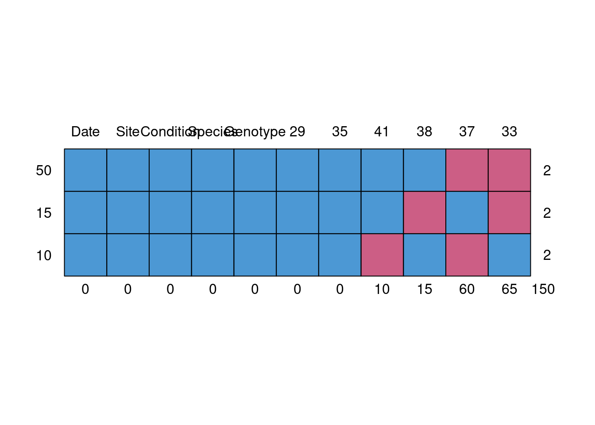
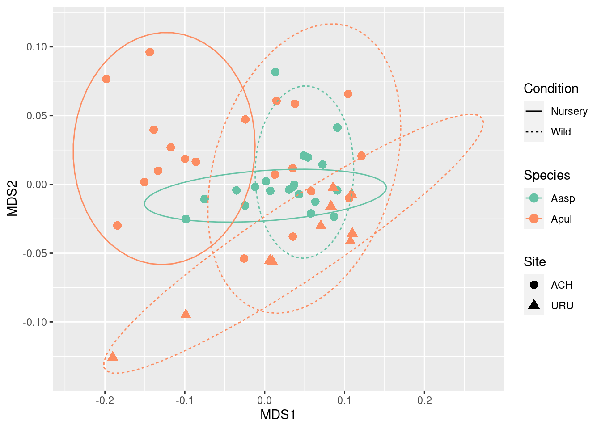
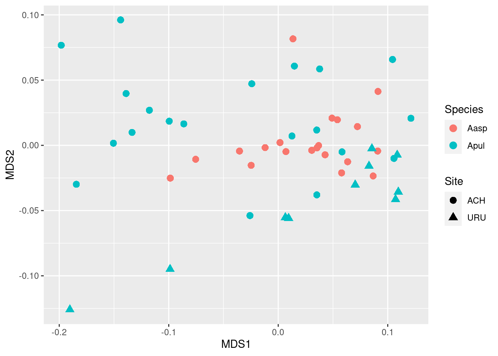
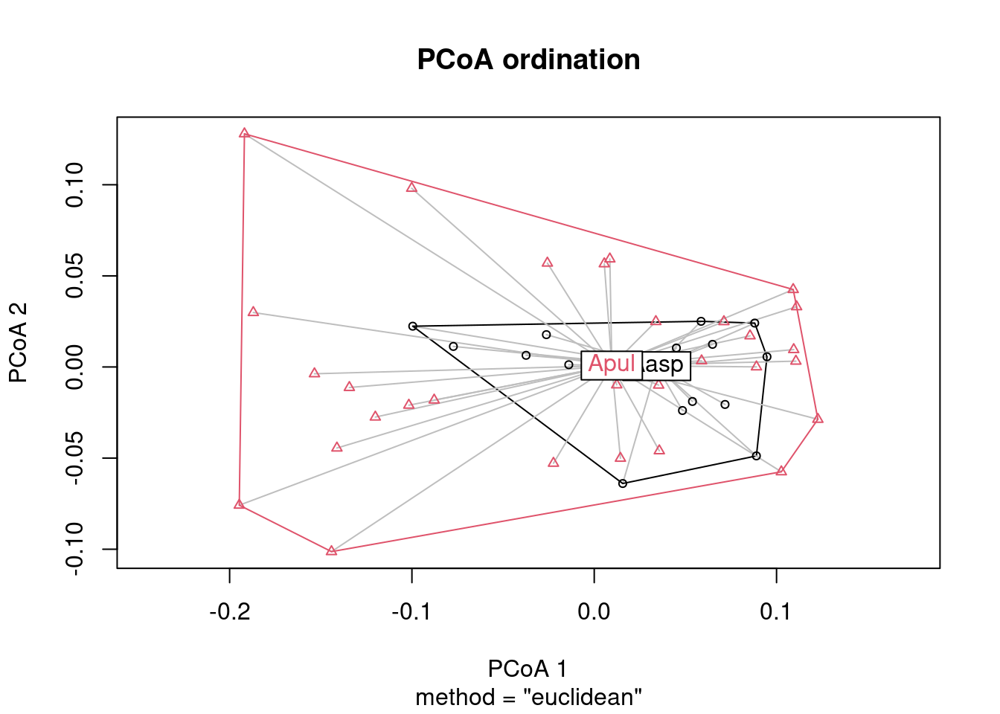
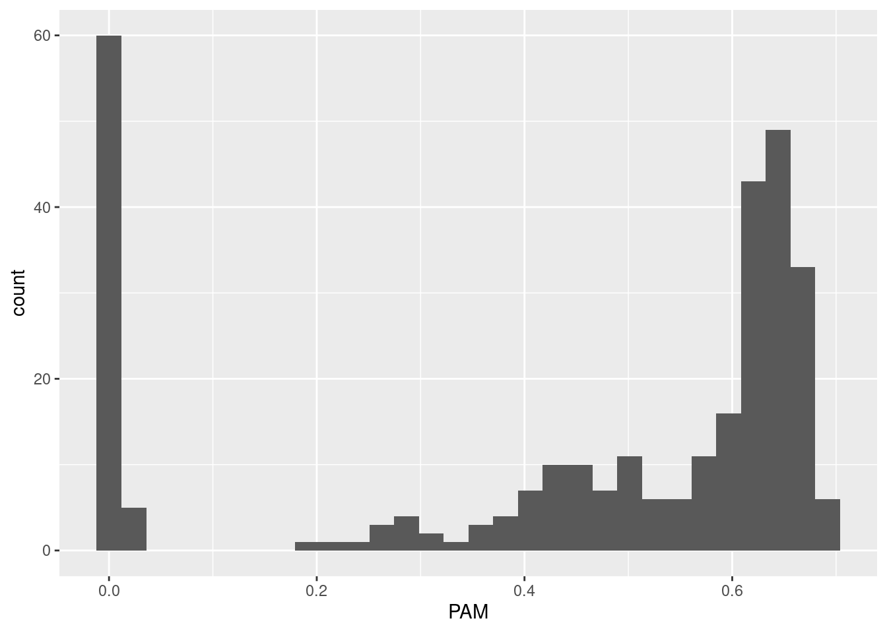

if(!require(devtools)){
install.packages("devtools")
}
devtools::install_github("greenjune-ship-it/CBASS", quiet = TRUE, force = TRUE)MultivariateAnalysis
Install CBASS
Load Packages
library(mice)
library(tidyr)
library(dplyr)
library(vegan)
library(CBASS)
library(ggplot2)Explore the Data
Prepare data
data <- cbass_dataset
data <- preprocess_dataset(data) %>% arrange(Temperature, Species, Condition)2023-08-17 17:01:05.817294 [INFO] `Site` column was converted to factor.
2023-08-17 17:01:05.817549 [INFO] `Condition` column was converted to factor.
2023-08-17 17:01:05.817697 [INFO] `Species` column was converted to factor.
2023-08-17 17:01:05.817833 [INFO] `Genotype` column was converted to factor.
2023-08-17 17:01:05.817936 [INFO] `PAM` column was converted to numeric.
2023-08-17 17:01:05.818038 [INFO] Removing rows with missing data...Pivot the data to get PAM values as the table with Temperature as column names
pivoted_data <- pivot_wider(
data,
id_cols = c(Date, Site, Condition, Species, Genotype),
names_from = Temperature, values_from = PAM)
# Display the result
head(pivoted_data)# A tibble: 6 × 11
Date Site Condition Species Genotype `29` `33` `35` `37` `38`
<date> <fct> <fct> <fct> <fct> <dbl> <dbl> <dbl> <dbl> <dbl>
1 2022-11-14 ACH Nursery Aasp 1 0.636 NA 0.64 NA 0.372
2 2022-11-14 ACH Nursery Aasp 2 0.615 NA 0.635 NA 0.324
3 2022-11-14 ACH Nursery Aasp 3 0.64 NA 0.619 NA 0.363
4 2022-11-14 ACH Nursery Aasp 4 0.669 NA 0.623 NA 0.442
5 2022-11-14 ACH Nursery Aasp 5 0.64 NA 0.619 NA 0.387
6 2022-11-15 ACH Nursery Aasp 6 0.664 NA 0.635 NA 0.492
# ℹ 1 more variable: `41` <dbl>Check Missing Values
# Have a look at missing data
md.pattern(pivoted_data)
Date Site Condition Species Genotype 29 35 41 38 37 33
50 1 1 1 1 1 1 1 1 1 0 0 2
15 1 1 1 1 1 1 1 1 0 1 0 2
10 1 1 1 1 1 1 1 0 1 0 1 2
0 0 0 0 0 0 0 10 15 60 65 150Clean-up the Data
For now we can just discard NAs, but we can also implement imputation for some data.
# Remove columns with too much NA and then omit the rest
clean_data <- pivoted_data %>% select(-`33`, -`37`) %>% na.omit()Make MDS
# MDS ordination
mds <- metaMDS(clean_data[,6:ncol(clean_data)], distance = "euclidean")Run 0 stress 0.04170669
Run 1 stress 0.04170669
... New best solution
... Procrustes: rmse 2.046092e-05 max resid 7.461085e-05
... Similar to previous best
Run 2 stress 0.08233164
Run 3 stress 0.103631
Run 4 stress 0.04170669
... New best solution
... Procrustes: rmse 1.808245e-05 max resid 7.018491e-05
... Similar to previous best
Run 5 stress 0.07739795
Run 6 stress 0.06439367
Run 7 stress 0.1002826
Run 8 stress 0.06439928
Run 9 stress 0.08112619
Run 10 stress 0.06439808
Run 11 stress 0.07375875
Run 12 stress 0.1020079
Run 13 stress 0.1107124
Run 14 stress 0.04170668
... New best solution
... Procrustes: rmse 3.796466e-06 max resid 1.948228e-05
... Similar to previous best
Run 15 stress 0.04170669
... Procrustes: rmse 1.540867e-05 max resid 5.558791e-05
... Similar to previous best
Run 16 stress 0.07545236
Run 17 stress 0.04170668
... New best solution
... Procrustes: rmse 1.384278e-05 max resid 6.213673e-05
... Similar to previous best
Run 18 stress 0.04170668
... New best solution
... Procrustes: rmse 1.328409e-05 max resid 5.982762e-05
... Similar to previous best
Run 19 stress 0.04170669
... Procrustes: rmse 1.656001e-05 max resid 6.206971e-05
... Similar to previous best
Run 20 stress 0.06439366
*** Best solution repeated 2 timesmds <- as.data.frame(mds$points)
mds$Species <- clean_data$Species
mds$Site <- clean_data$Site
mds$Condition <- clean_data$ConditionPlot results
ggplot(mds, aes(x = MDS1, y = MDS2, color = Species, shape = Site, linetype = Condition)) +
geom_point(size = 3) +
stat_ellipse() +
scale_color_brewer(palette = "Set2") # colorblind-friendly palette
OK, this is a nice picture that tells us nothing about the dependency of PAM from Temperature. And what’s better for live.
Coefficients of Variation. Ideally, these should be below 15-20 %.
CVs <- clean_data %>%
group_by(Site, Condition, Species) %>%
summarise(
CV_29 = sd(`29`) / mean(`29`) * 100,
CV_35 = sd(`35`) / mean(`35`) * 100,
CV_38 = sd(`38`) / mean(`38`) * 100,
CV_41 = sd(`41`) / mean(`41`) * 100
)`summarise()` has grouped output by 'Site', 'Condition'. You can override using
the `.groups` argument.Visualize:
# Reshape the data to a longer format
cv_data_long <- CVs %>%
pivot_longer(cols = starts_with("CV"), names_to = "Temperature", values_to = "CV")
ggplot(
cv_data_long, aes(x = Temperature, y = CV, color = Species)) +
geom_boxplot() +
facet_grid(~Site) +
labs(x = "Temperature", y = "Coefficient of Variation (%)") +
scale_color_brewer(palette = "Set2")
I suppose it should be almost fine, for 41 they are almost bleached.
Try perMANOVA
permanova <- adonis2(
clean_data[,6:ncol(clean_data)] ~ Site * Condition,
data = clean_data,
strata = clean_data$Species,
method = "euclidean")
permanovaPermutation test for adonis under reduced model
Terms added sequentially (first to last)
Blocks: strata
Permutation: free
Number of permutations: 999
adonis2(formula = clean_data[, 6:ncol(clean_data)] ~ Site * Condition, data = clean_data, method = "euclidean", strata = clean_data$Species)
Df SumOfSqs R2 F Pr(>F)
Site 1 0.03915 0.07649 5.3231 0.048 *
Condition 1 0.12699 0.24811 17.2660 0.001 ***
Residual 47 0.34568 0.67539
Total 49 0.51182 1.00000
---
Signif. codes: 0 '***' 0.001 '**' 0.01 '*' 0.05 '.' 0.1 ' ' 1Check if we can apply perMANOVA
dist <- vegdist(clean_data[,6:ncol(clean_data)], method = "euclidean")
PCO <- betadisper(dist, clean_data$Species)
plot(PCO, main = "PCoA ordination")
anova(PCO)Analysis of Variance Table
Response: Distances
Df Sum Sq Mean Sq F value Pr(>F)
Groups 1 0.037145 0.037145 16.064 0.0002125 ***
Residuals 48 0.110990 0.002312
---
Signif. codes: 0 '***' 0.001 '**' 0.01 '*' 0.05 '.' 0.1 ' ' 1Experimenting with Linear Models
The main idea remains the same. PAM linear depends on Temperature, so linear models should be more suitable than multivariate statistics here?
ggplot(data, aes(PAM)) +
geom_histogram(bins = 30)